The goal of the project is to create a magazine looking web application that includes two main features:
Please, find below detailed description of the project.
Navigation bar at the top of the page will guide you through the website.
Home: welcome page with a brief introduction to the website.
Issues: a list of issue pages where each page (issue) contains exactly three articles to read and study using the metadata tools. It is possible to change layout of the page with the buttons "Read full screen"/"Choose another article".
About the project: website documentation page.
Disclaimer: a modal message with disclaimer.
Choose the website theme: a list of website themes to choose between.
*Explore: a button that provides access to the metadata search tool (available on issue pages).
The section is dedicated to stylistic choices justification for each historical theme.
The page layout design of 1500-1800 years in Europe was taken as a reference for the stylistic choices of the theme. It is the period when printing press had just been invented and had gradually begun to spread around the Globe. It was used mainly for printing books.
Main design patterns used those times are as follows:
Example 1. Vicentino Ludovico degli Arrighi, The second edition of an early writing manual, Venice: (Nicolo d'Aristotile detto Zoppino), 1533 [1].
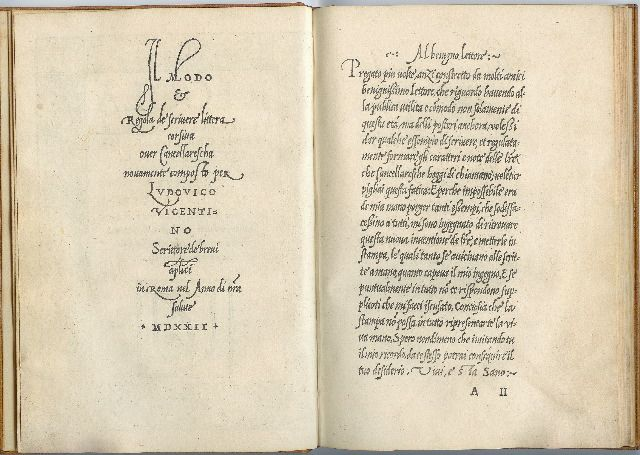Example 2. France. Grand Conseil. Arrest dv Grand Conseil donné sur la reformation de l’imprimerie, le vnziéme septembre 1544. [Lyon, 1548] [1].
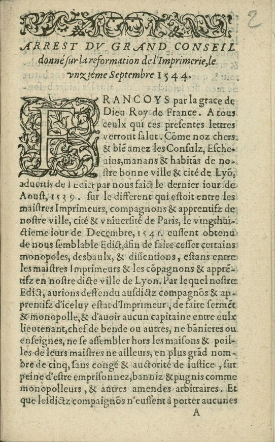Example 3. The Meditations of Marcus Aurelius Antoninus, 1792. The press uses the golden section to determine the text area, and the Fibonacci sequence to arrive at relative margin sizes (inner margin 3 units; top and outer margins 5 units; bottom margin 8 units) [1].
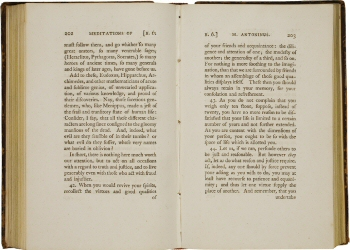How we applied those rules in our theme design:
The page layout design of the first half of XX century in Europe was taken as a reference for the stylistic choices of the theme. This period is dominated by such movements as Futurism and Constructivism. In design history this period is associated with attempts to replace traditional approach.
Main patterns used those times are as follows:
Example 1. Futurist magazine Lacerba, 1914 [1]
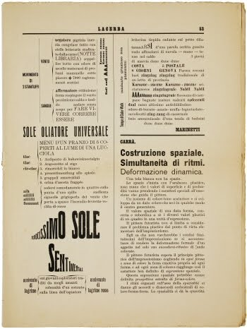Example 2. Theo van Doesburg, De Stijl, 1920 [1]
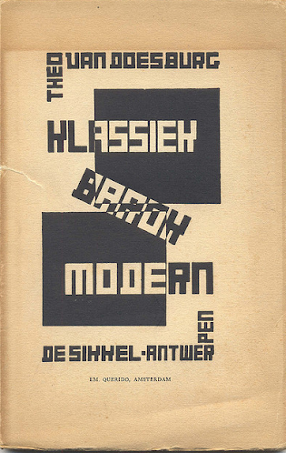Example 3. Bauhausbücher 5, Neue Gestaltung Piet Mondriaan. attributed to László Moholy-Nagy, 1924 [1]
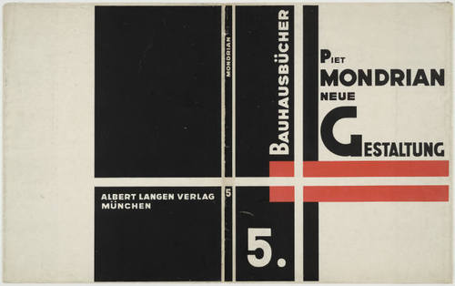How we applied those rules in our theme design:
Bibliography:
The 1990s was simultaneously a rich time for pop culture moments and one of the most garish and playful eras in graphic design history.
We were inspired by Memphis style, the style that kicked off the 80s, became ubiquitous in the 90s and is still gaining mainstream presence. The Milan, Italy-based Memphis Group was founded in 1980 when a group of designers, led by architect Ettore Sottsass, met and christened themselves to the soundtrack of Bob Dylan’s “Stuck Inside of Mobile with the Memphis Blues Again". Inspired by the Art Deco, Bauhaus, and Pop Art movements, the group produced influential Postmodern furniture and textiles, as well as ceramic, glass, and metal sculpture, from 1981 to 1988 (Fig. 1). We used 2 different, but in the same color scheme and with the same geometrical shapes, abstract backgrounds with Memphis style inspired accent for our website.
Fig. 1: Memphis Group furniture featured within a living room space.
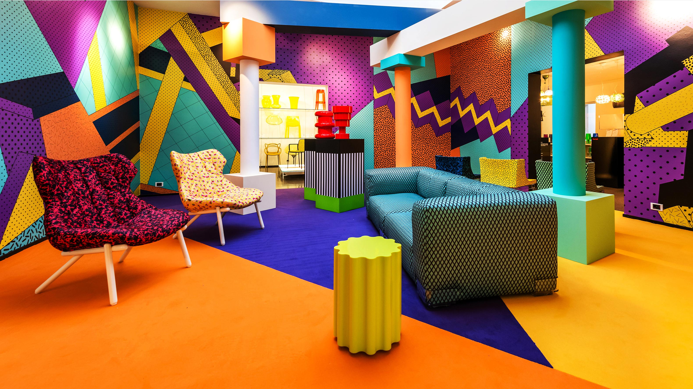The Memphis style is identified by a few key characteristics (Fig. 2):
Fig. 2: Vector patterns using repeated shapes, such as triangles, circles, and wavy lines
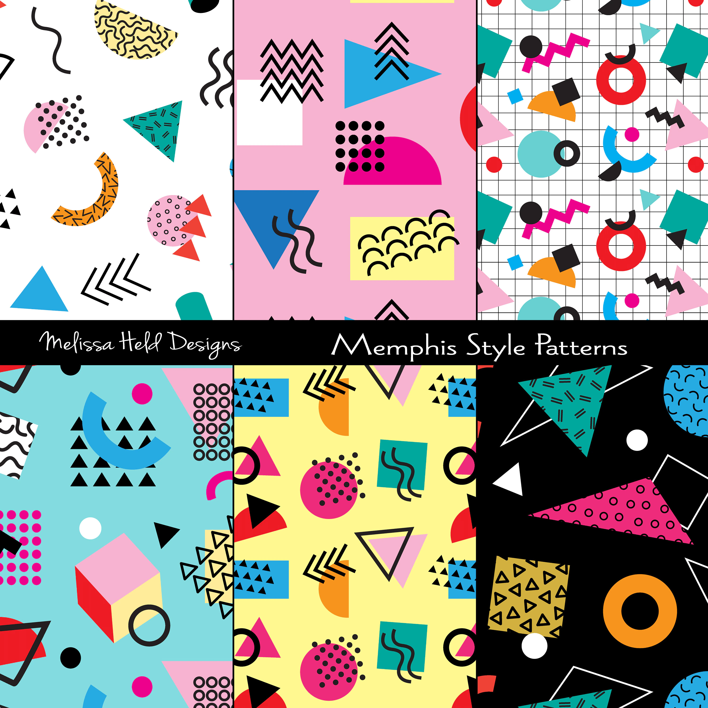For the style about the last decades of XX century we thought to reproduce the typographical choices of Right On!, a famous American teen magazine first published by the Laufer Company in 1971 (Fig. 3). It was headquartered in New York City. It continued publishing on a regular basis until 2014 and focused on African-American celebrities.
Fig. 3: Right On! magazine the issue dated October, 1993
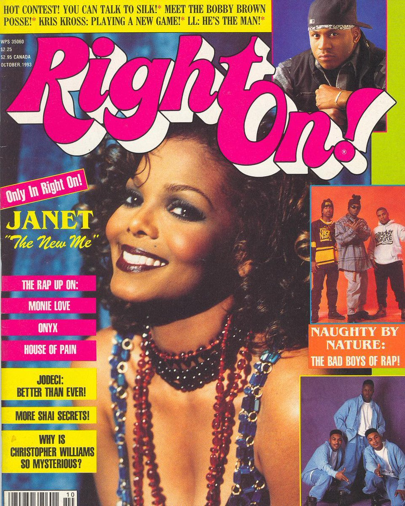The decision for the logo of our journal was to use one of the most similar one and using some shadow to give it the double border of the original one. The font used for the titles is Kavoon-Regular. Concerning the textual content of the journal page, we chose one of the most similar font basing on the reference image (Fig.4): Michroma-Regular. For subtitles and for the titles of the articles, we used Staatliches-Regular transformed in uppercase.
Fig. 4: Right On! Magazine pages
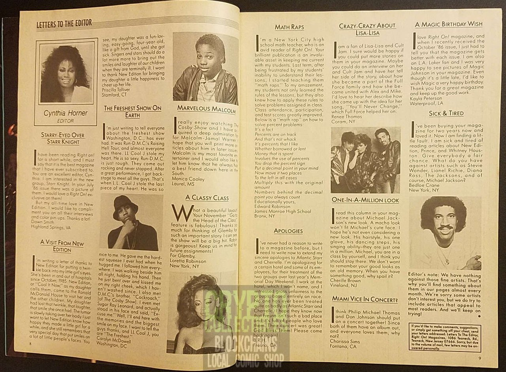The font VT323-Regular was used for the navigation bar, footer and explore accordion. This pixelated font was created from the glyphs of the DEC VT320 text terminal, and we used it for a user to experience low resolution computer screen.
The scrollbar designed for the 1990s theme is an accurate reproduction of the scrollbar developed for the Microsoft Windows, Windows 95, released on August 24, 1995 (Fig. 5). The link provided here showcases the evolution of the scrollbar throughout the years.
Fig. 5: The Windows 95 screen
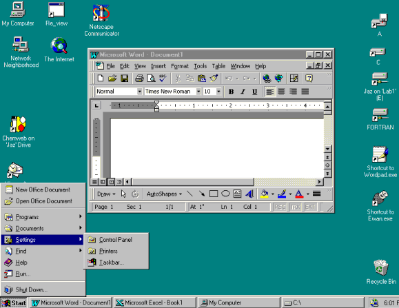Finally, cursor and pointer were changed into older versions developed in the releases of Microsoft Windows 95 (Fig. 6).
Fig. 6: Cursor and pointer used in 1990s theme on this website
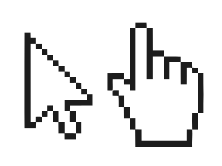The 21st century is just great where technology is concerned. With new techniques and movements constantly arriving on the scene, our sense of where things are going is more uncertain than ever.
As we move towards the mid-21st century, it's indisputable that web design is going to become increasingly important. As people live more and more of their lives online, digital user experiences will be the rock on which almost every big organisation is built.
Our prediction on how we think web design in 2030 will look like:
Everywhere we will look in 2030, there will be some sort of screens. We will use our electronic devices throughout the entire day and night. Having a dark mode makes it easier on the eyes to scroll
Even today, animation can play a much bigger role on a website. We can use animation in the traditional sense of animating a subject or object to aide in the telling of a story, or we can utilize certain animations to help guide users through an interface. As technology advances, online animation will only get more colorful and expressive.
Custom cursors are one of the most ignored yet innovative trends in website design. Through custom cursors, the website visitor will be able to experience different cursors when they navigate the page. These cursors will be different from the default browser cursor and add to the thrill of using your website.
With heavy, bold fonts, the reader is instantly drawn into the message, not necessarily the imagery. Combining these large fonts with neutral colors further emphasizes the headlines, quickly becoming an “image” of their own.
Blurred elements in backgrounds will be trending in web design. These backgrounds are welcoming and have an organic feel to them, making them pleasing to the human eye.
Minimalism has existed for a long time and will continue to return in the future. This trend is functional because it decreases the amount of content that must be loaded, saving time on slow internet.
In graphic design, geometric shapes are significant in pattern design, visual hierarchy, and an overall design itself. Likewise, geometric fonts will be gaining popularity among the font trends of 2030. Geometric fonts are those that designers customized from popular shapes like circles, squares, and triangles to create unique fonts. These fonts represent balance and simplistic designs, but with a unique twist.
Earthy colors and symmetry combined with neon accents will be in vogue, creating a delicate and well-measured composition.
Inspirations can be found here.
Metadata viewer is available for each article via the button EXPLORE on the Issues -> Issue 1. Love and Science page.
The metadata viewer has the following features:
* To make the metadata viewer work properly, the items (words) in articles must be marked up with certain html classes in advance (class=”person” for people, class=”organization” for institutions, class=”citation” for citations, class=”keyWord” for key words).
* Its is not possible to highlight more than 14 items at the same time.
Source code can be found on the GitHub page of the project.
I graduated from the University of Petrozavodsk, which is located in the northern part of Russia, majoring in Education. I am currently attending the Master's Degree in Digital Humanities and Digital Knowledge at the University of Bologna. I was responsible for marking up the second and the third texts, designing the Late XX Century and 2030 styles.
Graduated from faculty of Sociology, Saint Petersburg State University. Currentely studying at University of Bologna, Masters program in Digital Humanities and Digital Knowledge. For the project I developed page layout, "1500-1800" and "First half of XX century" historical themes, first text mark up and JavaScript code for metadata analysis.